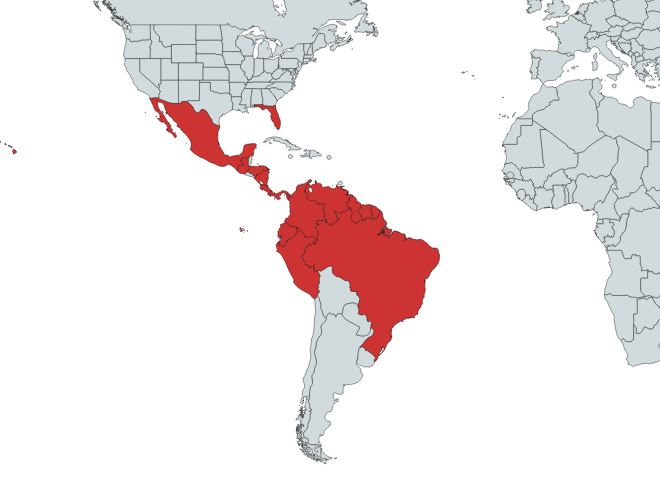

Descripcion:
Especie originaria de Mesoamérica; se extiende de México a Ecuador, Perú y Brasil. Se le cultiva ampliamente en el sur de Florida (Estados Unidos), en las Antillas y en Hawai. Se ha introducido ampliamente a regiones tropicales y subtropicales en todo el mundo. Su cultivo está muy extendido en Asia tropical, donde se le llama comúnmente planta del templo debido a que sus flores se ofrecen en los templos hindúes. Conocida hace miles de años por los pueblos que crearon civilizaciones tan portentosas como los Mayas, los Zapotecas y los Nahuas, por nombrar algunos, la flor llamada Sak-Nikte´, por los mayas y Cacaloxóchitl -flor del cuervo- por los nahuas, no sólo ha sido utilizada como ornamento de altísimo rango, sino que también tiene propiedades medicinales.
Usos Medicinales:
El exudado es usado para descomposturas de huesos: se humedece una parte de tela limpia con el látex y se coloca en la parte afectada. El follaje se usa para dejar de tener hijos: las ramas se rescoldean y blandas se colocan alrededor de la cintura en la parte posterior del cuerpo. También como cicatrizante.
La infusión de la corteza se emplea para curar contusiones internas. El jugo se usa para curar heridas.
Planta: Favorece la producción de leche (galactógeno), y es remedio contra la erisipela. El jugo cáustico lechoso que mana del tronco es venenoso.
La corteza y el látex que mana del tronco se utilizan en medicina casera como tópico en casos de heridas y contusiones internas. El látex del tronco es medicinal, por ejemplo en el Estado de Guerrero. La flor, goma y corteza es usada para la tos, tosferina, asma. Los Tarahumaras usan el látex para curar heridas en los pies y como purgante para lo cual la corteza es macerada y preparada en té.
Más específicamente, su látex se usa tradicionalmente para tratar problemas de la piel, como mezquinos, verrugas y "empeines". También es utilizado para curar la tiña, para sacar espinas, para "madurar granos no nacidos" y para tratar el dolor de cintura.
Uso en el tratamiento de heridas. La resina se pone directamente en la zona afectada; lo mismo en el caso de torceduras, y después se venda o entablilla. Se usa también en el padecimiento de pelagra, jiotes y mezquinos.
Principios activos útiles: Esta planta se caracteriza por contener poderosos alcaloides que actúan como estimulantes cardiacos y que no han sido estudiados debidamente.

Contra-indicaciones:
En general aun no se ha investigado debidabente sobre el uso de esta planta. Pero no podemos descartar los posibles malestares que podria causar el abuso de esta planta como un remedio casero
